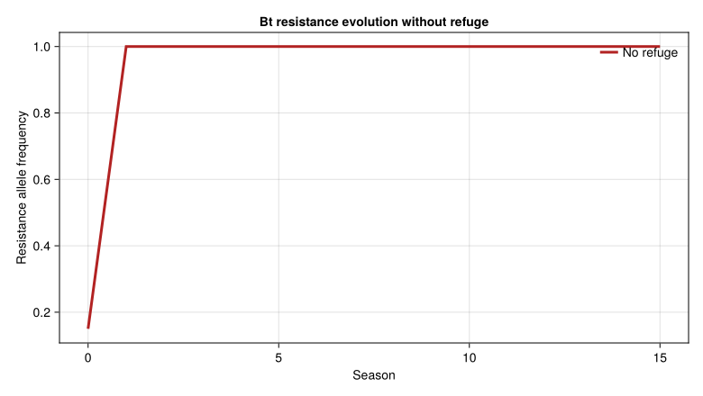
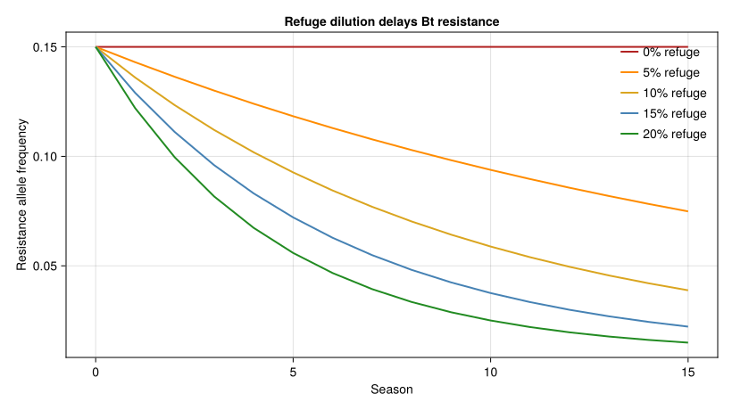

Bt Cotton Resistance Evolution
Simon Frost
- Background
- The Genetics Model
- Genotype-Specific Vital Rates
- Larval Age-Tolerance
- Setting Up Genotype Populations
- Weather: San Joaquin Valley, California
- Single-Season Simulation (All Three Genotypes)
- Allele Frequency Tracking Across Seasons
- Effect of Spatial Refuges
- Natural Enemy Feedback
- Two-Toxin (Pyramid) Strategy
- Species Tolerance Hierarchy
- Key Insights
Primary reference: (Gutierrez et al. 2006).
Background
Transgenic cotton expressing Bacillus thuringiensis (Bt) toxins is a major tool for insect pest management. However, the constant presence of toxin creates strong selection pressure for resistance. This vignette couples PBDM population dynamics with Hardy-Weinberg single-gene genetics to model the evolution of Bt resistance in pink bollworm (Pectinophora gossypiella), the primary pest of cotton.
The model tracks three genotypes — SS (susceptible), SR (heterozygous), and RR (resistant) — each with different mortality, development time, and fecundity responses to Bt toxin. Spatial refuges (non-Bt cotton) and temporal refuges (variable toxin concentration) slow resistance evolution by maintaining susceptible alleles in the population.
Reference: Gutierrez, A.P., Adamczyk Jr., J.J., Ponsard, S., and Ellis, C.K. (2006). Physiologically based demographics of Bt cotton–pest interactions II. Temporal refuges, natural enemy interactions. Ecological Modelling 191:360–382.
The Genetics Model
Resistance is assumed recessive, autosomal, and controlled by a single diallelic gene. Under panmixia (random mating), genotype frequencies follow Hardy-Weinberg equilibrium each generation.
using PhysiologicallyBasedDemographicModels
using CairoMakie
# --- Hardy-Weinberg Genetics ---
"""
Genotype frequencies from a single resistance allele frequency R.
Returns (freq_SS, freq_SR, freq_RR).
"""
function genotype_frequencies(R::Float64)
S = 1.0 - R
return (S^2, 2*S*R, R^2)
end
# Initial resistance allele frequency (Cry1Ac)
R_init = 0.15 # Arbitrarily high for demonstration
freq_SS, freq_SR, freq_RR = genotype_frequencies(R_init)
println("Initial genotype frequencies (R=$R_init):")
println(" SS (susceptible): $(round(freq_SS, digits=4))")
println(" SR (heterozygous): $(round(freq_SR, digits=4))")
println(" RR (resistant): $(round(freq_RR, digits=4))")Initial genotype frequencies (R=0.15):
SS (susceptible): 0.7225
SR (heterozygous): 0.255
RR (resistant): 0.0225Genotype-Specific Vital Rates
Each genotype experiences different effects from the Bt toxin. Resistant genotypes have higher survival but there may be fitness costs in the absence of Bt.
# --- Genotype-specific parameters for Pink Bollworm (PBW) ---
# Base developmental parameters (degree-days > 12.2°C)
const PBW_BASE_TEMP = 12.2 # °C
const PBW_UPPER_TEMP = 35.0 # °C
# Larval period (non-Bt cotton)
const PBW_LARVAL_DD = 370.0 # DD to pupation
# Bt toxin effects by genotype
# Development time multiplier (longer = more exposed to predation)
const DEV_TIME_MULT = Dict(
:SS => 1.4, # 40% longer development on Bt cotton
:SR => 1.3, # 30% longer (resistance is recessive)
:RR => 1.2, # 20% longer
)
# Daily Bt mortality rate (genotype-specific)
const BT_MORTALITY = Dict(
:SS => 0.15, # High mortality — very susceptible
:SR => 0.12, # Intermediate (resistance recessive)
:RR => 0.02, # Low mortality — resistant
)
# Fecundity reduction on Bt cotton (fraction of normal)
const FECUNDITY_MULT = Dict(
:SS => 0.60, # 40% reduction
:SR => 0.70, # 30% reduction
:RR => 0.80, # 20% reduction
)
println("Genotype effects on Bt cotton:")
println("Genotype | Dev. time mult | Daily Bt mortality | Fecundity mult")
println("-"^65)
for g in [:SS, :SR, :RR]
println(" $g | $(DEV_TIME_MULT[g])× |" *
" $(BT_MORTALITY[g]) | $(FECUNDITY_MULT[g])")
endGenotype effects on Bt cotton:
Genotype | Dev. time mult | Daily Bt mortality | Fecundity mult
-----------------------------------------------------------------
SS | 1.4× | 0.15 | 0.6
SR | 1.3× | 0.12 | 0.7
RR | 1.2× | 0.02 | 0.8Larval Age-Tolerance
Older larvae are more tolerant of Bt toxin — their gut processes less toxin per unit body mass. This creates a temporal refuge within the plant.
# Larval age-tolerance factor (Eq. 8ii of Gutierrez et al.)
# mortality_factor(j) = 1 - 0.15j, where j = larval age class (1-5)
function bt_age_tolerance(age_class::Int)
return max(0.0, 1.0 - 0.15 * age_class)
end
println("Bt mortality reduction by larval age class:")
for j in 1:5
factor = bt_age_tolerance(j)
println(" Age class $j: $(round(factor * 100, digits=0))% of full Bt effect")
end
println("→ Late-instar larvae experience only 25% of the toxin effect")Bt mortality reduction by larval age class:
Age class 1: 85.0% of full Bt effect
Age class 2: 70.0% of full Bt effect
Age class 3: 55.0% of full Bt effect
Age class 4: 40.0% of full Bt effect
Age class 5: 25.0% of full Bt effect
→ Late-instar larvae experience only 25% of the toxin effectSetting Up Genotype Populations
We model each genotype as a separate population with genotype-specific vital rates. The three populations share the same environment (cotton field) but differ in their response to Bt toxin.
pbw_dev = LinearDevelopmentRate(PBW_BASE_TEMP, PBW_UPPER_TEMP)
k = 20 # Substages per delay
# Create three genotype populations
function make_pbw_genotype(genotype::Symbol, initial_N::Float64)
# Adjust developmental time for Bt effects
τ_larva = PBW_LARVAL_DD * DEV_TIME_MULT[genotype]
attrition = BT_MORTALITY[genotype]
stages = [
LifeStage(:egg, DistributedDelay(k, 52.0; W0=initial_N * 0.3),
pbw_dev, 0.005),
LifeStage(:larva, DistributedDelay(k, τ_larva; W0=initial_N * 0.3),
pbw_dev, attrition),
LifeStage(:pupa, DistributedDelay(k, 180.0; W0=initial_N * 0.2),
pbw_dev, 0.002),
LifeStage(:adult, DistributedDelay(k, 350.0; W0=initial_N * 0.2),
pbw_dev, 0.003),
]
return Population(Symbol("pbw_$genotype"), stages)
end
# Initial population split by genotype frequency
N_total = 1000.0
pop_SS = make_pbw_genotype(:SS, N_total * freq_SS)
pop_SR = make_pbw_genotype(:SR, N_total * freq_SR)
pop_RR = make_pbw_genotype(:RR, N_total * freq_RR)
for (g, pop) in [(:SS, pop_SS), (:SR, pop_SR), (:RR, pop_RR)]
println("$g: $(n_stages(pop)) stages, $(n_substages(pop)) substages")
endSS: 4 stages, 80 substages
SR: 4 stages, 80 substages
RR: 4 stages, 80 substagesWeather: San Joaquin Valley, California
# Approximate Central California cotton-growing climate
n_days = 200 # Cotton season (April–October)
valley_temps = Float64[]
for d in 1:n_days
# Spring start day 100 (April 10), summer peak day 200
doy = d + 99
T = 22.0 + 12.0 * sin(2π * (doy - 120) / 365)
push!(valley_temps, clamp(T, 5.0, 42.0))
end
weather = WeatherSeries(valley_temps; day_offset=100)
println("Season temperatures:")
println(" Start (day 100): $(round(valley_temps[1], digits=1))°C")
println(" Peak (day ~200): $(round(maximum(valley_temps), digits=1))°C")
println(" End (day 300): $(round(valley_temps[end], digits=1))°C")Season temperatures:
Start (day 100): 17.9°C
Peak (day ~200): 34.0°C
End (day 300): 22.7°CSingle-Season Simulation (All Three Genotypes)
# Solve each genotype independently
tspan = (100, 299)
sol_SS = solve(PBDMProblem(pop_SS, weather, tspan), DirectIteration())
sol_SR = solve(PBDMProblem(pop_SR, weather, tspan), DirectIteration())
sol_RR = solve(PBDMProblem(pop_RR, weather, tspan), DirectIteration())
# Final adult populations
adults_SS = stage_trajectory(sol_SS, 4)[end] # Adult stage
adults_SR = stage_trajectory(sol_SR, 4)[end]
adults_RR = stage_trajectory(sol_RR, 4)[end]
total_adults = adults_SS + adults_SR + adults_RR
println("\nEnd-of-season adult populations on Bt cotton:")
println(" SS: $(round(adults_SS, digits=1))")
println(" SR: $(round(adults_SR, digits=1))")
println(" RR: $(round(adults_RR, digits=1))")
println(" Total: $(round(total_adults, digits=1))")End-of-season adult populations on Bt cotton:
SS: 0.0
SR: 0.0
RR: 0.0
Total: 0.0Allele Frequency Tracking Across Seasons
The key question: how fast does resistance evolve? We track the resistance allele frequency R across multiple growing seasons.
"""
Compute resistance allele frequency from genotype population sizes.
R = (2×N_RR + N_SR) / (2×N_total)
"""
function resistance_allele_freq(n_SS, n_SR, n_RR)
n_total = n_SS + n_SR + n_RR
n_total ≈ 0.0 && return 0.0
return (2*n_RR + n_SR) / (2*n_total)
end
"""
Apply fecundity multipliers and compute next-generation egg allocation
using Hardy-Weinberg from the surviving adults' allele frequency.
"""
function next_generation_eggs(adults_SS, adults_SR, adults_RR, total_eggs)
# Weight adults by fecundity
effective_SS = adults_SS * FECUNDITY_MULT[:SS]
effective_SR = adults_SR * FECUNDITY_MULT[:SR]
effective_RR = adults_RR * FECUNDITY_MULT[:RR]
# New allele frequency from fecundity-weighted adults
R_new = resistance_allele_freq(effective_SS, effective_SR, effective_RR)
# Allocate eggs by Hardy-Weinberg
fSS, fSR, fRR = genotype_frequencies(R_new)
return (total_eggs * fSS, total_eggs * fSR, total_eggs * fRR, R_new)
end
# Multi-season simulation
n_seasons = 15
R_history = Float64[R_init]
pop_history = Float64[N_total]
N_SS_season = N_total * freq_SS
N_SR_season = N_total * freq_SR
N_RR_season = N_total * freq_RR
println("\nMulti-season resistance evolution (NO refuge):")
println("Season | R_freq | N_total | N_SS | N_SR | N_RR")
println("-"^65)
for season in 1:n_seasons
# Build populations
pSS = make_pbw_genotype(:SS, N_SS_season)
pSR = make_pbw_genotype(:SR, N_SR_season)
pRR = make_pbw_genotype(:RR, N_RR_season)
# Simulate season
sSS = solve(PBDMProblem(pSS, weather, tspan), DirectIteration())
sSR = solve(PBDMProblem(pSR, weather, tspan), DirectIteration())
sRR = solve(PBDMProblem(pRR, weather, tspan), DirectIteration())
# End-of-season adults
a_SS = max(0.0, stage_trajectory(sSS, 4)[end])
a_SR = max(0.0, stage_trajectory(sSR, 4)[end])
a_RR = max(0.0, stage_trajectory(sRR, 4)[end])
R_current = resistance_allele_freq(a_SS, a_SR, a_RR)
# Next season: eggs from fecundity-weighted adults
# Overwintering survival: 0.5% (Roach & Adkisson 1971)
overwinter = 0.005
N_next = (a_SS + a_SR + a_RR) * overwinter * 50.0 # Scale up for fecundity
N_next = clamp(N_next, 100.0, 10000.0)
N_SS_season, N_SR_season, N_RR_season, R_new =
next_generation_eggs(a_SS, a_SR, a_RR, N_next)
push!(R_history, R_new)
push!(pop_history, N_next)
println(" $(lpad(season, 2)) | $(round(R_current, digits=4)) | " *
"$(round(N_next, digits=0)) | $(round(N_SS_season, digits=0)) | " *
"$(round(N_SR_season, digits=0)) | $(round(N_RR_season, digits=0))")
endMulti-season resistance evolution (NO refuge):
Season | R_freq | N_total | N_SS | N_SR | N_RR
-----------------------------------------------------------------
1 | 1.0 | 100.0 | 0.0 | 0.0 | 100.0
2 | 1.0 | 100.0 | 0.0 | 0.0 | 100.0
3 | 1.0 | 100.0 | 0.0 | 0.0 | 100.0
4 | 1.0 | 100.0 | 0.0 | 0.0 | 100.0
5 | 1.0 | 100.0 | 0.0 | 0.0 | 100.0
6 | 1.0 | 100.0 | 0.0 | 0.0 | 100.0
7 | 1.0 | 100.0 | 0.0 | 0.0 | 100.0
8 | 1.0 | 100.0 | 0.0 | 0.0 | 100.0
9 | 1.0 | 100.0 | 0.0 | 0.0 | 100.0
10 | 1.0 | 100.0 | 0.0 | 0.0 | 100.0
11 | 1.0 | 100.0 | 0.0 | 0.0 | 100.0
12 | 1.0 | 100.0 | 0.0 | 0.0 | 100.0
13 | 1.0 | 100.0 | 0.0 | 0.0 | 100.0
14 | 1.0 | 100.0 | 0.0 | 0.0 | 100.0
15 | 1.0 | 100.0 | 0.0 | 0.0 | 100.0Resistance allele frequency across seasons
fig = Figure(size=(780, 440))
ax = Axis(fig[1, 1],
xlabel="Season",
ylabel="Resistance allele frequency",
title="Bt resistance evolution without refuge")
lines!(ax, 0:n_seasons, R_history; color=:firebrick, linewidth=3, label="No refuge")
axislegend(ax, position=:rt, framevisible=false)
fig
Effect of Spatial Refuges
Mandated refuges of non-Bt cotton preserve susceptible genotypes. Gene flow from refuge dilutes resistance alleles each generation.
"""
Apply refuge dilution: a fraction of the adult population comes from
non-Bt refuge where all genotypes have equal fitness (no selection).
"""
function apply_refuge_dilution(R_bt, refuge_fraction, R_refuge=0.01)
# Weighted average of Bt field and refuge allele frequencies
return (1.0 - refuge_fraction) * R_bt + refuge_fraction * R_refuge
end
# Compare resistance trajectories at different refuge sizes
refuge_trajectories = Dict{Int, Vector{Float64}}()
println("\nResistance allele frequency after 15 seasons:")
println("Refuge | Final R | Resistance status")
println("-"^50)
for (refuge_pct, refuge_frac) in [(0, 0.0), (5, 0.05), (10, 0.10),
(15, 0.15), (20, 0.20)]
R = R_init
R_trajectory = Float64[R]
for season in 1:15
# Selection on Bt field (simplified: R increases by ~30% per generation)
# This is a simplified selection model
fSS, fSR, fRR = genotype_frequencies(R)
# Relative fitness on Bt cotton (survival × fecundity)
w_SS = (1.0 - BT_MORTALITY[:SS] * 50) * FECUNDITY_MULT[:SS]
w_SR = (1.0 - BT_MORTALITY[:SR] * 50) * FECUNDITY_MULT[:SR]
w_RR = (1.0 - BT_MORTALITY[:RR] * 50) * FECUNDITY_MULT[:RR]
# Clamp fitness to positive values
w_SS = max(0.001, w_SS)
w_SR = max(0.001, w_SR)
w_RR = max(0.001, w_RR)
# Allele frequency after selection
w_bar = fSS * w_SS + fSR * w_SR + fRR * w_RR
R_sel = (fSR * w_SR * 0.5 + fRR * w_RR) / w_bar
# Apply refuge dilution
R = apply_refuge_dilution(R_sel, refuge_frac)
R = clamp(R, 0.0, 1.0)
push!(R_trajectory, R)
end
refuge_trajectories[refuge_pct] = R_trajectory
status = R > 0.5 ? "RESISTANT" : R > 0.1 ? "building" : "controlled"
println(" $(lpad(refuge_pct, 2))% | $(round(R, digits=4)) | $status")
endResistance allele frequency after 15 seasons:
Refuge | Final R | Resistance status
--------------------------------------------------
0% | 0.15 | building
5% | 0.0749 | controlled
10% | 0.0388 | controlled
15% | 0.0222 | controlled
20% | 0.0149 | controlledRefuge size slows resistance evolution
fig = Figure(size=(820, 460))
ax = Axis(fig[1, 1],
xlabel="Season",
ylabel="Resistance allele frequency",
title="Refuge dilution delays Bt resistance")
for (pct, color) in zip([0, 5, 10, 15, 20], [:firebrick, :darkorange, :goldenrod, :steelblue, :forestgreen])
lines!(ax, 0:15, refuge_trajectories[pct]; color=color, linewidth=2, label="$(pct)% refuge")
end
axislegend(ax, position=:rt, framevisible=false)
fig
Natural Enemy Feedback
Generalist predators feeding on Bt-intoxicated prey suffer reduced longevity, weakening biological control.
# Predator longevity multiplier on Bt-intoxicated prey
const PRED_SURVIVAL_1TOXIN = 0.72 # 28% reduction (Ponsard et al. 2002)
const PRED_SURVIVAL_2TOXIN = 0.52 # 48% reduction (0.72²)
# Predation survivorship function (Eq. 9i)
# lx_pred(a) = exp(-0.0185a), where a = age in degree-days
function predation_survival(age_dd::Real)
return exp(-0.0185 * age_dd)
end
# Example: egg-larval period predation
println("\nPredation survival through larval development:")
for (species, dd) in [("Pink bollworm", 370.0), ("Bollworm", 445.0),
("Beet armyworm", 313.0)]
surv = predation_survival(dd)
println(" $species ($dd DD): $(round(surv * 100, digits=2))% survive predation")
end
println("\nPredator effectiveness on Bt vs conventional cotton:")
println(" Conventional: 100% predator longevity")
println(" Single Bt toxin: $(round(PRED_SURVIVAL_1TOXIN * 100))% predator longevity")
println(" Two Bt toxins: $(round(PRED_SURVIVAL_2TOXIN * 100))% predator longevity")Predation survival through larval development:
Pink bollworm (370.0 DD): 0.11% survive predation
Bollworm (445.0 DD): 0.03% survive predation
Beet armyworm (313.0 DD): 0.31% survive predation
Predator effectiveness on Bt vs conventional cotton:
Conventional: 100% predator longevity
Single Bt toxin: 72.0% predator longevity
Two Bt toxins: 52.0% predator longevityTwo-Toxin (Pyramid) Strategy
Bollgard II expresses both Cry1Ac and Cry2Ab. Resistance to each toxin is tracked independently.
# Two independent loci: R₁ (Cry1Ac) and R₂ (Cry2Ab)
R1_init = 0.15 # Cry1Ac resistance allele
R2_init = 0.10 # Cry2Ab resistance allele
# Two-toxin survivorship (multiplicative, Eq. 8iii)
# lx_total = lx_Cry1Ac × lx_Cry2Ab
function two_toxin_survival(R1, R2)
# Genotype frequencies at each locus
_, _, fRR_1 = genotype_frequencies(R1)
_, _, fRR_2 = genotype_frequencies(R2)
# Only doubly-homozygous resistant individuals survive well
# Probability of being RR at both loci (independent)
prob_fully_resistant = fRR_1 * fRR_2
# Others face compounded mortality
surv_susceptible = (1 - BT_MORTALITY[:SS] * 50) ^ 2 # Both toxins
surv_resistant = (1 - BT_MORTALITY[:RR] * 50) ^ 2
avg_survival = prob_fully_resistant * max(0.001, surv_resistant) +
(1 - prob_fully_resistant) * max(0.001, surv_susceptible)
return avg_survival
end
println("\nTwo-toxin pyramid analysis:")
println("R1(Cry1Ac) | R2(Cry2Ab) | P(doubly resistant) | Avg survival")
println("-"^65)
for (r1, r2) in [(0.01, 0.01), (0.05, 0.03), (0.15, 0.10),
(0.50, 0.30), (0.90, 0.70)]
_, _, fRR1 = genotype_frequencies(r1)
_, _, fRR2 = genotype_frequencies(r2)
p_double = fRR1 * fRR2
surv = two_toxin_survival(r1, r2)
println(" $(round(r1, digits=2)) | $(round(r2, digits=2)) | " *
" $(round(p_double, digits=6)) | $(round(surv, digits=6))")
endTwo-toxin pyramid analysis:
R1(Cry1Ac) | R2(Cry2Ab) | P(doubly resistant) | Avg survival
-----------------------------------------------------------------
0.01 | 0.01 | 0.0 | 42.25
0.05 | 0.03 | 2.0e-6 | 42.249905
0.15 | 0.1 | 0.000225 | 42.240494
0.5 | 0.3 | 0.0225 | 41.299398
0.9 | 0.7 | 0.3969 | 25.481372Species Tolerance Hierarchy
Not all pests respond equally to Bt. The model captures a spectrum from highly susceptible (pink bollworm) to essentially immune (Lygus).
println("\nPest tolerance hierarchy to Cry1Ac:")
println("="^70)
println("Species | Tolerance | Natural refuge | Resistance risk")
println("-"^70)
species_data = [
("Pink bollworm", "Very low", "Small", "HIGH (but effective)"),
("Tobacco budworm", "Low", "Moderate", "HIGH"),
("Bollworm", "Moderate", "Moderate", "Moderate"),
("Cabbage looper", "Moderate", "Moderate", "Low-moderate"),
("Beet armyworm", "High", "Large", "Low (temporal refuge)"),
("Fall armyworm", "High", "Large", "Very low"),
("Soybean looper", "High", "Large", "Very low"),
("Lygus bug", "Immune", "N/A", "None (not affected)"),
]
for (sp, tol, ref, risk) in species_data
println("$(rpad(sp, 19))| $(rpad(tol, 10))| $(rpad(ref, 15))| $risk")
end
println("\nParadox: Highly tolerant species BENEFIT from Bt cotton because")
println(" Bt reduces predator populations → secondary pest outbreaks")Pest tolerance hierarchy to Cry1Ac:
======================================================================
Species | Tolerance | Natural refuge | Resistance risk
----------------------------------------------------------------------
Pink bollworm | Very low | Small | HIGH (but effective)
Tobacco budworm | Low | Moderate | HIGH
Bollworm | Moderate | Moderate | Moderate
Cabbage looper | Moderate | Moderate | Low-moderate
Beet armyworm | High | Large | Low (temporal refuge)
Fall armyworm | High | Large | Very low
Soybean looper | High | Large | Very low
Lygus bug | Immune | N/A | None (not affected)
Paradox: Highly tolerant species BENEFIT from Bt cotton because
Bt reduces predator populations → secondary pest outbreaksKey Insights
Recessive resistance slows evolution: Since SR heterozygotes are nearly as susceptible as SS, resistance alleles are selected against when rare — the “high dose / refuge” strategy exploits this.
Refuges are essential: Even 5% non-Bt cotton dramatically slows resistance evolution by maintaining susceptible alleles through gene flow. Without refuges, resistance can fix in 4–6 years.
Temporal refuges matter: Variable Bt toxin concentration across plant parts and larval ages creates windows where susceptible genotypes can survive, maintaining heterozygosity.
Natural enemies create tradeoffs: Bt kills susceptible pests but also weakens predators (28% longevity reduction). This can cause secondary pest outbreaks in tolerant species like fall armyworm.
Two-toxin pyramids are not additive: The second toxin mainly compensates for reduced predation rather than providing independent control. Doubly-resistant genotypes require fixation at both loci, which is much slower.
Species biology determines outcome: Stenophagous specialists (pink bollworm) face strong selection but small refuges; polyphagous generalists (fall armyworm) have large temporal refuges that prevent resistance even without spatial refuges.
<div id="refs" class="references csl-bib-body hanging-indent">
<div id="ref-Gutierrez2006BtCottonChina" class="csl-entry">
Gutierrez, Andrew Paul, John J. Adamczyk, Sergine Ponsard, and C. K. Ellis. 2006. “Physiologically Based Demographics of Bt Cotton–Pest Interactions. II. Temporal Refuges, Resistance and Environmental Fate.” Ecological Modelling 191: 360–82. https://doi.org/10.1016/j.ecolmodel.2005.06.002.
</div>
</div>